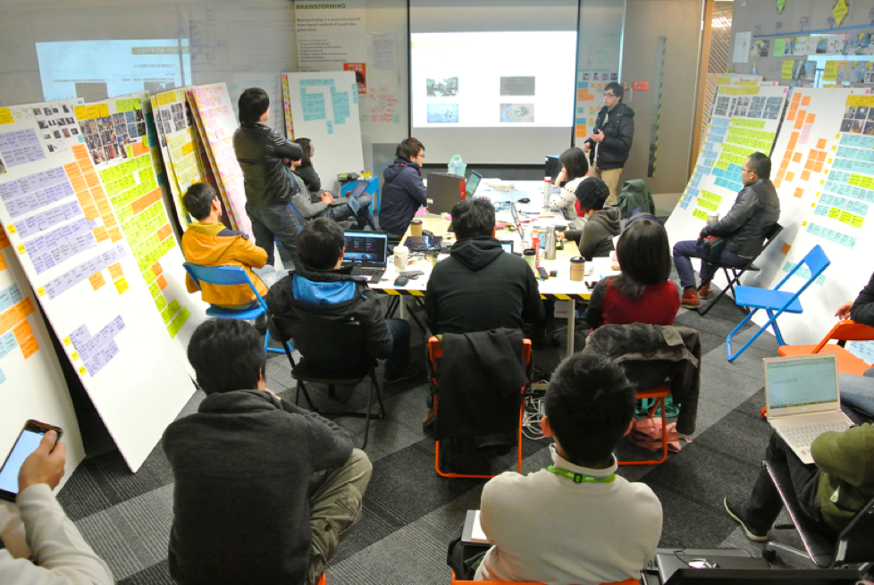
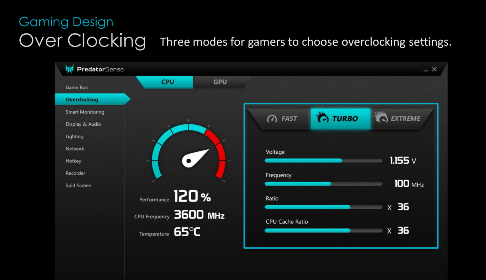
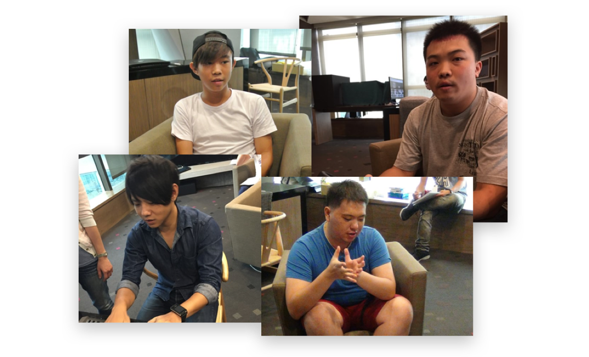
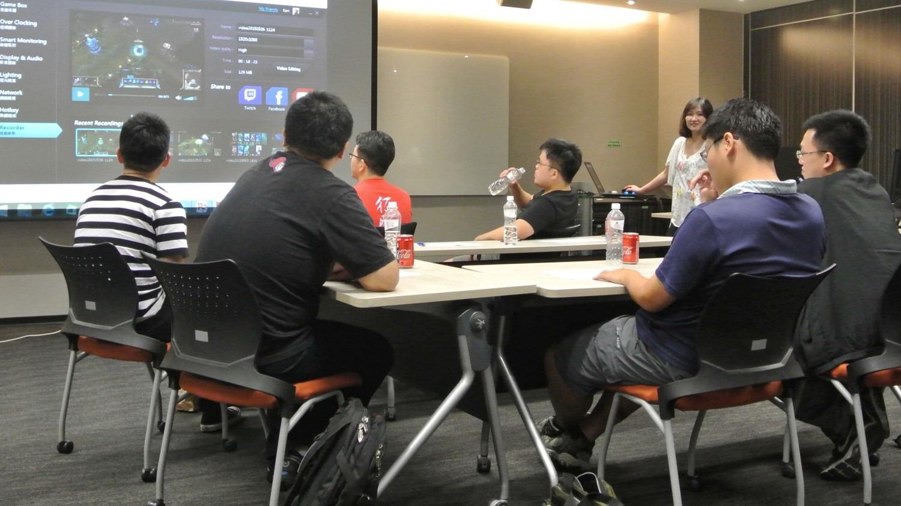
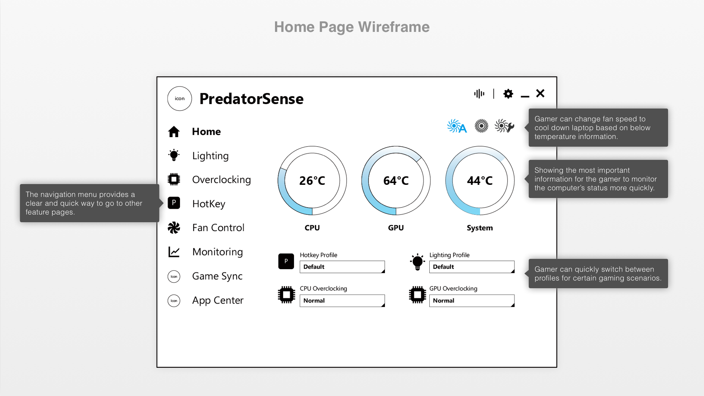

桌面應用程式
軟硬整合
iF Design Award
PredatorSense 遊戲控制中心
為電競玩家打造的強大系統管理工具，榮獲德國 iF 設計獎
iF Award
德國 iF Design Award 2018
100+
覆蓋全球國家數
92%
社群調查用戶滿意度

市場上控制中心軟體的四大痛點
2018年時期的市場調查顯示，當時的控制中心軟體普遍存在以下問題，導致玩家難以發揮硬體全部潛能。
介面複雜，學習曲線陡峭
以技嘉 Aorus Control Center 為例，使用者需要多次點擊才能找到所需功能，對新手玩家極不友善。
功能分散，缺乏整合性
微星 Dragon Center 將功能分散在多個子模組，使用者需安裝多個程式才能完整控制硬體。
缺乏遊戲情境的專屬優化
多數控制中心僅提供基本的硬體控制，缺乏針對不同遊戲類型的個性化設定。
硬體控制不夠直觀
以華碩 Armoury Crate 為例，控制選項過於專業化，且系統資源佔用過高。
三個階段的設計過程
1
腦力激盪與概念設計
先收集公司內部 Gamer 的想法，並實際產出可以互動的設計雛形。
腦力激盪

- 研究員將公司內部玩家聚集並進行腦力激盪
- 每個人都有機會發表想法並進行討論
- 大家篩選後選出最熱門功能，發想概念設計
概念設計

- 將設計製作成可互動的原型，供後續測試使用
2
使用者研究與概念驗證
進行玩家訪談與焦點團體，確保設計符合玩家的實際需求。
個別訪談

- 研究員進行1對1訪談，針對概念設計進行提問
- 訪談後彙整所有紀錄，整理共同訴求
焦點團體

- 進行國內與國外焦點團體討論
- 同樣進行意見收集與彙整
3
需求定案確認最終設計
從使用者研究中篩選出有感的功能進行設計與規劃。
Wireflow

- 根據研究結論進行流程設計
- 製作 wireflow 設計文件，考慮跨產品差異性
最終設計

- 交由視覺設計師進行最終畫面設計
獲得國際設計獎項肯定，覆蓋全球市場
iF
德國 iF Design Award 2018
全球六大洲
超過100個國家
92%
社群用戶滿意度
- 提供直觀且易用的介面，大幅降低學習曲線
- 整合所有硬體控制功能於單一介面（散熱、效能、燈效）
- 提供遊戲情境的專屬優化設定，85%用戶認為「非常實用」
- 實現即時系統監控與效能調校
Next Case Study
消費電子 · IoT
Vision360 雲端行車紀錄器